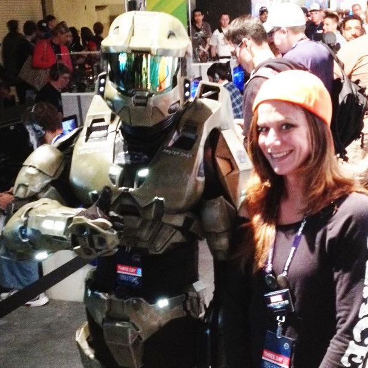
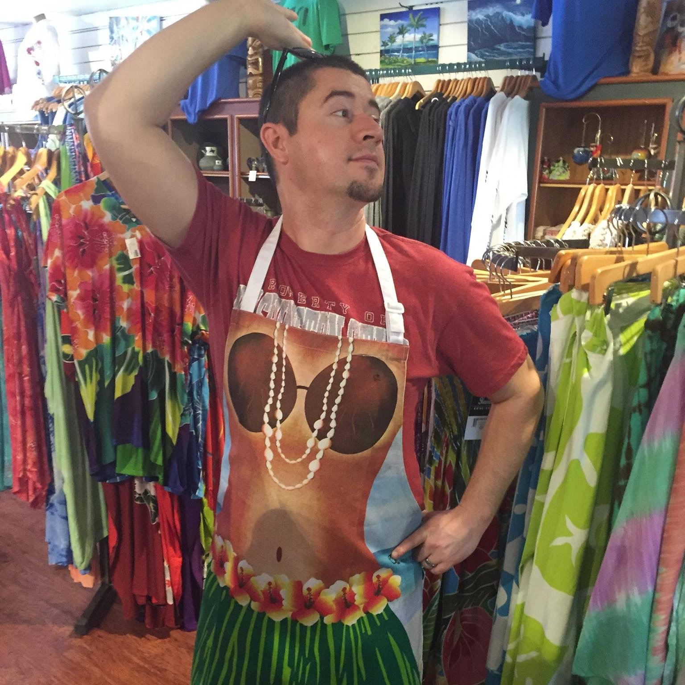
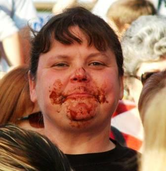

Leslie Pedro
1 / 7

2 / 7

Mark Peters
3 / 7

Patrick Sanchez
4 / 7

Robert Kariuki
5 / 7

Sally Budack
6 / 7
Gabriela Orozco
7 / 7
Brandon Gibbons
Leslie Pedro
Mark Peters
Patrick Sanchez
Robert Kariuki
Sally Budack
Gabriela Orozco
Brandon Gibbons
Engineers:
Leslie Pedro
I am graduating this December from UW Tacoma with a degree in Computer Science & Systems.
- Mark Peters
Mark is a UWT student and is graduating early 2017.
- Patrick Sanchez
I will be graduating in 2017 with a degree in Computer Science & Systems.
- Robert Kariuki
Born and raised in Mombasa, Kenya a coastal region. Moved to the states in 2010. I use my down time to play soccer,basketball and most of just community volunteering.
- Sally Budack
I will be graduating in 2017 from UWT with CSS degree so I can write EHRs.
- Gabriela Orozco
I am a senior at the University of Washington majoring in CSS. I will be graduating in December 2016. One more quarter!
Documentation:
- Brandon Gibbons
I'm a new senior in the css program at the University of Washington. A married father of two who is hoping to help create technology that can improve human life, and more epcifically those with an Autism Spectrum Disorder, just like my eldest son.